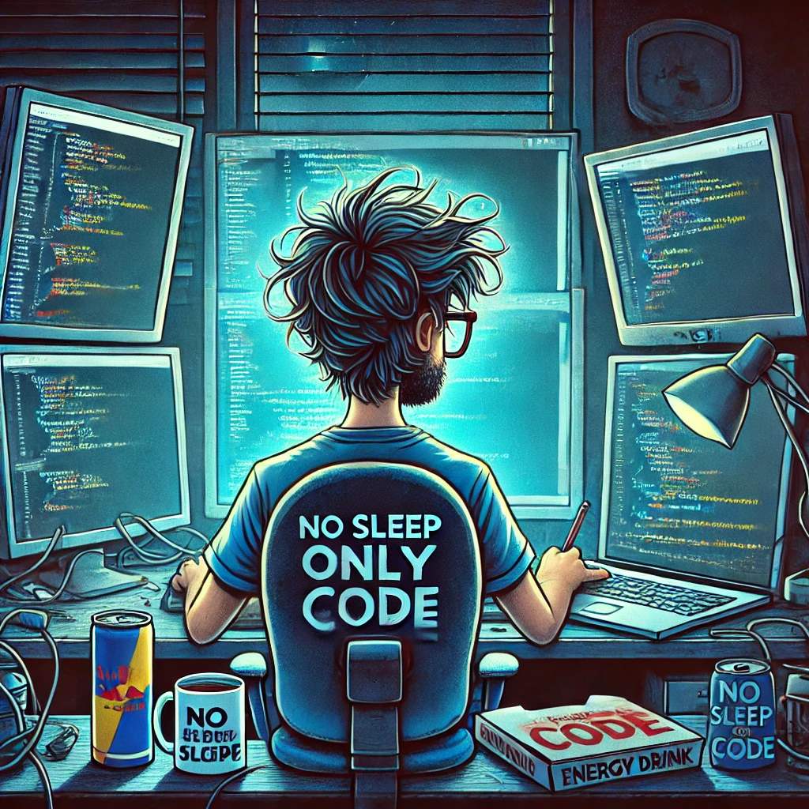

Raphael O

Summary
I am hardworking student with big ambitions and little experience in IT.
Education
- Bachelor of Engineering, Computer Science - University of Information Technology in Katowice (2023 - 2027)
- Master of Arts, National Security - University of Management and Occupational Safety in Katowice(2019 - 2021)
Work Experience
Stellantis, Electronics engineer
Oct 2023 - Present
- Diagnosing and repairing electrical and electronic system failures in vehicles, ensuring proper functionality of
components
- Interpreting and analyzing electrical schematics and wiring diagrams to identify malfunctions and perform
accurate repairs
- Replacing or repairing faulty electronic components, such as fuses, relays, connectors, and circuit boards
Motorola Solutions, Junior Software Developer
Nov 2022 - Apr 2023
- Participating in software development for thermal cameras, including implementing new features and
optimizing existing solutions
- Collaborating with engineering teams to understand technical requirements and project specifications
- Analyzing and fixing bugs reported by testers or end users, including debugging and troubleshooting issues
Skills
Technical skills:
C++, Git, Linux, Jira, OOP, Basic knowledge of relational databasesSoft skills:
Communication, Independence, teamwork
Other